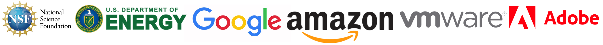

The SOLAR (Sustainability, Optimization, Learning, and Algorithms Research) Lab investigates topics centered around carbon-intelligent computing (application) and data-driven online optimization (theory). In the SOLAR Lab, we develop rigorous algorithms using data-driven online optimization and learning tools that are applicable in several domains such as data center energy optimization, electricity market, electric vehicles, smart energy systems, and networking applications such as multimedia networking and edge/cloud networking.
We are actively looking for well-motivated and talented students and postdocs to join our research group. If interested, please see our recent publications and active research projects, and if still interested please apply to our graduate program and mention our lab name.
Our research is supported by a Google Research Faculty Award, an NSF CAREER Award, and other grants from NSF (CNS-2102963, CNS-2106299, CPS-2136199, NGSDI-2105494, CNS-1908298), Department of Energy, Amazon, VMWare, and Adobe.
